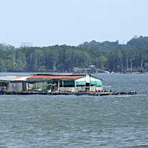
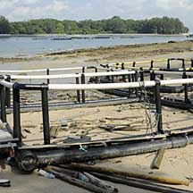
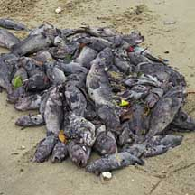
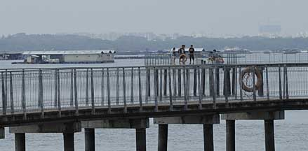

|
|
| index of concepts |
| Fish
farming and aquaculture updated Dec 2019
Fish farms in Singapore Singapore's
consumption of fish is estimated to be 100,000 tonnes per year of
which about 5% is accounted for by local foodfish aquaculture. This
is mainly from coastal fish farms. They produce marine foodfish
species like groupers, seabass, snappers and milkfish as well as
green mussels and crustacean (shrimp/mangrove crabs). There are
also freshwater foodfish farms producing snakeheads, tilapia, catfishes
and carps and other cyprinids. From Aquaculture
in Singapore on the AVA website Why
farm fishes?
|
 Fish farm off waters of Pasir Ris and Pulau Ubin. |
 Fish farm equipment 'parked' on Lazarus island shore. |
 Mass death of farm fishes Pasir Ris, Dec 09 |
Some effects of acquaculture
|
 Fish farms off Chek Jawa, Jan 10 |
What can we do about this?
See also impact of prawn farming. |
| Photos of fish farming and aquaculture on Singapore shores |
| On wildsingapore
flickr for free download |